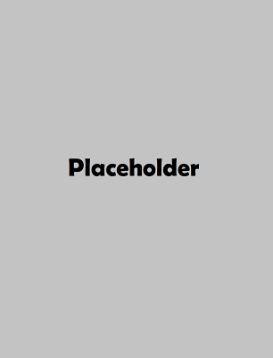

DATE

Avenida de la Marina is one of the most traditional streets in A Coruña.
It is one of the liveliest areas of the city and has many restaurants, bars and terraces.
Here begins the longest promenade in Europe (more than 13 km).
The Old City is characterized by cobbled streets and temples with Romanesque
facades, picturesque cafeterias serving squid sandwiches, tapas bars and restaurants
serving international cuisine.A Coruña known as a town of sailors and fishermen that grew thanks to and for its port.
It also receives in this beautiful place the ocean liners loaded with tourists to whom the city
entrusts part of its economy.Central square in the city of A Coruña, dedicated to the heroine María Pita, designed in the
mid-19th century and where the Town Hall is located. It forms a large rectangle lined with
porticoed buildings, under which there are various establishments.The Castle of San Anton was built in the 16th century, fulfilling defensive and prison functions;
later it was used as a pesthouse to isolate sailors who arrived in the city affected by an infectious disease.
In 1968 it was inaugurated as an archaeological museum and has been considered a historical-artistic monument since 1994.
The museum houses archeology objects such as: protohistoric goldsmithing, megalithism, the Bronze Age, castro culture,
Romanization and different aspects of the city.Tower of Hercules, the oldest lighthouse in the world still in operation. Centuries before Christ,
there was a town of Celtic origin known as Brigantia in the bay of A Coruña, inhabited by the Ártabros.
It served as a lighthouse during the centuries of Romanization, until in the 5th century,
the Norman attacks forced the inhabitants to abandon it, and to take refuge inside. In the 18th century, the tower
regained its prominence and function as a lighthouse. 2000 years ago the ancient lighthouse lit its light for the first time,
becoming a point of reference for sailors and a must-see for travellers. Hence, the Tower of Hercules was declared a World Heritage
Site in 2009.It is the house where the painter Pablo Picasso lived between 1891 and 1895, as a child.
It is a typical house of the 19th century extension area in La Coruña and it is kept with the same
things that existed when the Ruiz Picasso family lived there: furniture, objects and original equipment.
Among the works (the originals of which are preserved in other museums) are oil on canvas, oil on wood,
pen and pencil drawings, inks, charcoals and watercolours.
PS: Currently I work thereThe Santa Cruz Castle was built in the 16th century with the aim of completing the defensive
system of the Coruña bay. After losing its strategic function, it became, already in the 19th century,
the residence of the daughter of the writer Emilia Pardo Bazán. It is at this time when the castle dependencies
are reconstructed, giving the central building the shape of a country house as we know it today. After the death
of the Countess, it was donated, in 1938, to the Cavalry Army, becoming a summer residence for military orphans until 1988.
The Castle of Santa Cruz was declared an Asset of Cultural Interest due to its high historical interest, which, together
with its natural and landscape beauty, make this place an extraordinary place.What has been an old defensive point has become the best viewpoint in A Coruña.
From the top of Monte de San Pedro you can see the coming and going of the boats guided by
the ancient lighthouse. You will be impressed by the presence of the immense canyons. War machines
that used to defend the city and now point to the horizon so that no one misses the best sunset.